Ancient Greece
When you finish reading, test your knowledge and take the quiz!

Summary
Ancient Greece was a northeastern Mediterranean civilization, existing from the Greek Dark Ages of the 12th–9th centuries BC to the end of classical antiquity (c. 600 AD), that comprised a loose collection of culturally and linguistically related city-states and other territories. Most of these regions were officially unified only once, for 13 years, under Alexander the Great's empire from 336 to 323 BC (though this excludes a number of Greek city-states free from Alexander's jurisdiction in the western Mediterranean, around the Black Sea, Cyprus, and Cyrenaica). In Western history, the era of classical antiquity was immediately followed by the Early Middle Ages and the Byzantine period. Roughly three centuries after the Late Bronze Age collapse of Mycenaean Greece, Greek urban poleis began to form in the 8th century BC, ushering in the Archaic period and the colonization of the Mediterranean Basin. This was followed by the age of Classical Greece, from the Greco-Persian Wars to the 5th to 4th centuries BC, and which included the Golden Age of Athens.
The conquests of Alexander the Great of Macedon spread Hellenistic civilization from the western Mediterranean to Central Asia. The Hellenistic period ended with the conquest of the eastern Mediterranean world by the Roman Republic, and the annexation of the Roman province of Macedonia in Roman Greece, and later the province of Achaea during the Roman Empire. Classical Greek culture, especially philosophy, had a powerful influence on ancient Rome, which carried a version of it throughout the Mediterranean and much of Europe. For this reason, Classical Greece is generally considered the cradle of Western civilization, the seminal culture from which the modern West derives many of its founding archetypes and ideas in politics, philosophy, science, and art.
Archaic Period

In the 8th century BC, Greece began to emerge from the Dark Ages, which followed the collapse of the Mycenaean civilization. Literacy had been lost and the Mycenaean script forgotten, but the Greeks adopted the Phoenician alphabet, modifying it to create the Greek alphabet. Objects inscribed with Phoenician writing may have been available in Greece from the 9th century BC, but the earliest evidence of Greek writing comes from graffiti on Greek pottery from the mid-8th century. Greece was divided into many small self-governing communities, a pattern largely dictated by its geography: every island, valley and plain is cut off from its neighbors by the sea or mountain ranges. The Lelantine War (c. 710 – c. 650 BC) is the earliest documented war of the ancient Greek period. It was fought between the important poleis (city-states) of Chalcis and Eretria over the fertile Lelantine plain of Euboea. Both cities seem to have declined as a result of the long war, though Chalcis was the nominal victor. A mercantile class arose in the first half of the 7th century BC, shown by the introduction of coinage in about 680 BC. This seems to have introduced tension to many city-states, as their aristocratic regimes were threatened by the new wealth of merchants ambitious for political power. From 650 BC onwards, the aristocracies had to fight to maintain themselves against populist tyrants. A growing population and a shortage of land also seem to have created internal strife between rich and poor in many city-states.
In Sparta, the Messenian Wars resulted in the conquest of Messenia and enserfment of the Messenians, beginning in the latter half of the 8th century BC. This was an unprecedented act in ancient Greece, which led to a social revolution in which the subjugated population of helots farmed and labored for Sparta, whilst every Spartan male citizen became a soldier of the Spartan army permanently in arms. Rich and poor citizens alike were obliged to live and train as soldiers, an equality that defused social conflict. These reforms, attributed to Lycurgus of Sparta, were probably complete by 650 BC. Athens suffered a land and agrarian crisis in the late 7th century BC, again resulting in civil strife. The Archon (chief magistrate) Draco made severe reforms to the law code in 621 BC (hence "draconian"), but these failed to quell the conflict. Eventually, the moderate reforms of Solon (594 BC), improving the lot of the poor but firmly entrenching the aristocracy in power, gave Athens some stability. By the 6th century BC, several cities had emerged as dominant in Greek affairs: Athens, Sparta, Corinth, and Thebes. Each of them had brought the surrounding rural areas and smaller towns under their control, and Athens and Corinth had become major maritime and mercantile powers as well.

Rapidly increasing population in the 8th and 7th centuries BC had resulted in the emigration of many Greeks to form colonies in Magna Graecia (Southern Italy and Sicily), Asia Minor and further afield. The emigration effectively ceased in the 6th century BC by which time the Greek world had, culturally and linguistically, become much larger than the area of present-day Greece. Greek colonies were not politically controlled by their founding cities, although they often retained religious and commercial links with them. The Greek colonies of Sicily, especially Syracuse, were soon drawn into prolonged conflicts with the Carthaginians. These conflicts lasted from 600 BC to 265 BC, when the Roman Republic allied with the Mamertines to fend off the new tyrant of Syracuse, Hiero II, and then the Carthaginians. As a result, Rome became the new dominant power against the fading strength of the Sicilian Greek cities and the fading Carthaginian hegemony. One year later, the First Punic War erupted.
In this period, Greece and its overseas colonies enjoyed huge economic development in commerce and manufacturing, with rising general prosperity. Some studies estimate that the average Greek household grew fivefold between 800 and 300 BC, indicating a large increase in average income. In the second half of the 6th century BC, Athens fell under the tyranny of Pisistratus followed by his sons Hippias and Hipparchus. However, in 510 BC, at the instigation of the Athenian aristocrat Cleisthenes, the Spartan king Cleomenes I helped the Athenians overthrow the tyranny, possibly attracted by silver deposits at Laurion. Sparta and Athens promptly turned on each other, at which point Cleomenes I installed Isagoras as a pro-Spartan archon. Eager to secure Athens' independence from Spartan control, Cleisthenes proposed a political revolution: that all citizens share power, regardless of status, making Athens a "democracy". The democratic enthusiasm of the Athenians swept out Isagoras and threw back the Spartan-led invasion to restore him. The advent of democracy cured many of the social ills of Athens and ushered in the Golden Age.
Classical Greece

In 499 BC, the Ionian city states under Persian rule rebelled against their Persian-supported tyrant rulers. Supported by troops sent from Athens and Eretria, they advanced as far as Sardis and burnt the city before being driven back by a Persian counterattack. The revolt continued until 494, when the rebelling Ionians were defeated. Darius did not forget that Athens had assisted the Ionian revolt, and in 490 he assembled an armada to retaliate. Though heavily outnumbered, the Athenians—supported by their Plataean allies—defeated the Persian hordes at the Battle of Marathon, and the Persian fleet turned tail. Ten years later, a second invasion was launched by Darius' son Xerxes. The city-states of northern and central Greece submitted to the Persian forces without resistance, but a coalition of 31 Greek city states, including Athens and Sparta, determined to resist the Persian invaders. At the same time, Greek Sicily was invaded by a Carthaginian force. In 480 BC, the first major battle of the invasion was fought at Thermopylae, where a small rearguard of Greeks, led by three hundred Spartans, held a crucial pass guarding the heart of Greece for several days; at the same time Gelon, tyrant of Syracuse, defeated the Carthaginian invasion at the Battle of Himera.
The Persians were decisively defeated at sea by a primarily Athenian naval force at the Battle of Salamis, and on land in 479 BC at the Battle of Plataea. The alliance against Persia continued, initially led by the Spartan Pausanias but from 477 by Athens, and by 460 Persia had been driven out of the Aegean. During this long campaign, the Delian League gradually transformed from a defensive alliance of Greek states into an Athenian empire, as Athens' growing naval power intimidated the other league states. Athens ended its campaigns against Persia in 450, after a disastrous defeat in Egypt in 454, and the death of Cimon in action against the Persians on Cyprus in 450.
Peloponnesian War

As the Athenian fight against the Persian empire waned, conflict grew between Athens and Sparta. Suspicious of the increasing Athenian power funded by the Delian League, Sparta offered aid to reluctant members of the League to rebel against Athenian domination. These tensions were exacerbated in 462 BC when Athens sent a force to aid Sparta in overcoming a helot revolt, but this aid was rejected by the Spartans. In the 450s, Athens took control of Boeotia, and won victories over Aegina and Corinth. However, Athens failed to win a decisive victory, and in 447 lost Boeotia again. Athens and Sparta signed the Thirty Years' Peace in the winter of 446/5, ending the conflict. Despite the treaty, Athenian relations with Sparta declined again in the 430s, and in 431 BC the Peloponnesian War began. The first phase of the war saw a series of fruitless annual invasions of Attica by Sparta, while Athens successfully fought the Corinthian empire in northwest Greece and defended its own empire, despite a plague which killed the leading Athenian statesman Pericles. The war turned after Athenian victories led by Cleon at Pylos and Sphakteria, and Sparta sued for peace, but the Athenians rejected the proposal. The Athenian failure to regain control of Boeotia at Delium and Brasidas' successes in northern Greece in 424 improved Sparta's position after Sphakteria. After the deaths of Cleon and Brasidas, the strongest proponents of war on each side, a peace treaty was negoitiated in 421 by the Athenian general Nicias.
The peace did not last, however. In 418 BC allied forces of Athens and Argos were defeated by Sparta at Mantinea. In 415 Athens launched an ambitious naval expedition to dominate Sicily; the expedition ended in disaster at the harbor of Syracuse, with almost the entire army killed, and the ships destroyed. Soon after the Athenian defeat in Syracuse, Athens' Ionian allies began to rebel against the Delian league, while Persia began to once again involve itself in Greek affairs on the Spartan side. Initially the Athenian position continued relatively strong, with important victories at Cyzicus in 410 and Arginusae in 406. However, in 405 the Spartan Lysander defeated Athens in the Battle of Aegospotami, and began to blockade Athens' harbour; driven by hunger, Athens sued for peace, agreeing to surrender their fleet and join the Spartan-led Peloponnesian League. Following the Athenian surrender, Sparta installed an oligarchic regime, the Thirty Tyrants, in Athens, one of a number of Spartan-backed oligarchies which rose to power after the Peloponnesian war. Spartan predominance did not last: after only a year, the Thirty had been overthrown.
Rise of Macedon

The first half of the fourth century saw the major Greek states attempt to dominate the mainland; none were successful, and their resulting weakness led to a power vacuum which would eventually be filled by Macedon under Philip II and then Alexander the Great. In the immediate aftermath of the Peloponnesian war, Sparta attempted to extend their own power, leading Argos, Athens, Corinth, and Thebes to join against them. Aiming to prevent any single Greek state gaining the dominance that would allow it to challenge Persia, the Persian king initially joined the alliance against Sparta, before imposing the Peace of Antalcidas ("King's Peace") which restored Persia's control over the Anatolian Greeks.
By 371 BC, Thebes was in the ascendancy, defeating Sparta at the Battle of Leuctra, killing the Spartan king Cleombrotus I, and invading Laconia. Further Theban successes against Sparta in 369 led to Messenia gaining independence; Sparta never recovered from the loss of Messenia's fertile land and the helot workforce it provided. The rising power of Thebes led Sparta and Athens to join forces; in 362 they were defeated by Thebes at the Battle of Mantinea. In the aftermath of Mantinea, none of the major Greek states were able to dominate. Though Thebes had won the battle, their general Epaminondas was killed, and they spent the following decades embroiled in wars with their neighbours; Athens, meanwhile, saw its second naval alliance, formed in 377, collapse in the mid-350s.

The power vacuum in Greece after the Battle of Mantinea was filled by Macedon, under Philip II. In 338 BC, he defeated a Greek alliance at the Battle of Chaeronea, and subsequently formed the League of Corinth. Philip planned to lead the League to invade Persia, but was murdered in 336 BC. His son Alexander the Great was left to fulfil his father's ambitions. After campaigns against Macedon's western and northern enemies, and those Greek states that had broken from the League of Corinth following the death of Philip, Alexander began his campaign against Persia in 334 BC. He conquered Persia, defeating Darius III at the Battle of Issus in 333 BC, and after the Battle of Gaugamela in 331 BC proclaimed himself king of Asia. From 329 BC he led expeditions to Bactria and then India; further plans to invade Arabia and North Africa were halted by his death in 323 BC.
Alexander the Great
When you finish reading, test your knowledge and take the quiz!

Summary
Alexander III of Macedon (Ancient Greek: Ἀλέξανδρος, romanized: Alexandros; 20/21 July 356 BC – 10/11 June 323 BC), commonly known as Alexander the Great, was a king of the ancient Greek kingdom of Macedon. He succeeded his father Philip II to the throne in 336 BC at the age of 20, and spent most of his ruling years conducting a lengthy military campaign throughout Western Asia and Egypt. By the age of 30, he had created one of the largest empires in history, stretching from Greece to northwestern India. He was undefeated in battle and is widely considered to be one of history's greatest and most successful military commanders. Until the age of 16, Alexander was tutored by Aristotle. In 335 BC, shortly after his assumption of kingship over Macedon, he campaigned in the Balkans and reasserted control over Thrace and Illyria before marching on the city of Thebes, which was subsequently destroyed in battle. Alexander then led the League of Corinth, and used his authority to launch the pan-Hellenic project envisaged by his father, assuming leadership over all Greeks in their conquest of Persia.
In 334 BC, he invaded the Achaemenid Persian Empire and began a series of campaigns that lasted for 10 years. Following his conquest of Asia Minor, Alexander broke the power of Achaemenid Persia in a series of decisive battles, including those at Issus and Gaugamela; he subsequently overthrew Darius III and conquered the Achaemenid Empire in its entirety. After the fall of Persia, the Macedonian Empire held a vast swath of territory between the Adriatic Sea and the Indus River. Alexander endeavored to reach the "ends of the world and the Great Outer Sea" and invaded India in 326 BC, achieving an important victory over Porus, an ancient Indian king of present-day Punjab, at the Battle of the Hydaspes. Due to the demand of his homesick troops, he eventually turned back at the Beas River and later died in 323 BC in Babylon, the city of Mesopotamia that he had planned to establish as his empire's capital. Alexander's death left unexecuted an additional series of planned military and mercantile campaigns that would have begun with a Greek invasion of Arabia. In the years following his death, a series of civil wars broke out across the Macedonian Empire, eventually leading to its disintegration at the hands of the Diadochi.
With his death marking the start of the Hellenistic period, Alexander's legacy includes the cultural diffusion and syncretism that his conquests engendered, such as Greco-Buddhism and Hellenistic Judaism. He founded more than twenty cities, with the most prominent being the city of Alexandria in Egypt. Alexander's settlement of Greek colonists and the resulting spread of Greek culture led to the overwhelming dominance of Hellenistic civilization and influence as far east as the Indian subcontinent. The Hellenistic period developed through the Roman Empire into modern Western culture; the Greek language became the lingua franca of the region and was the predominant language of the Byzantine Empire up until its collapse in the mid-15th century AD. Greek-speaking communities in central Anatolia and in far-eastern Anatolia survived until the Greek genocide and Greek–Turkish population exchanges of the early 20th century AD. Alexander became legendary as a classical hero in the mould of Achilles, featuring prominently in the historical and mythical traditions of both Greek and non-Greek cultures. His military achievements and unprecedented enduring successes in battle made him the measure against which many later military leaders would compare themselves, and his tactics remain a significant subject of study in military academies worldwide.
Childhood & Education
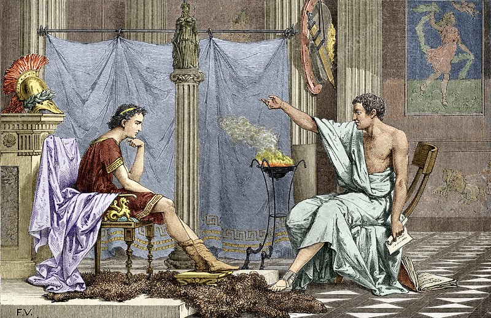Alexander III was born in Pella, the capital of the Kingdom of Macedon, on the sixth day of the ancient Greek month of Hekatombaion, which probably corresponds to 20 July 356 BC (although the exact date is uncertain). He was the son of the erstwhile king of Macedon, Philip II, and his fourth wife, Olympias In his early years, Alexander was raised by a nurse, Lanike, sister of Alexander's future general Cleitus the Black. Later in his childhood, Alexander was tutored by the strict Leonidas, a relative of his mother, and by Lysimachus of Acarnania. Alexander was raised in the manner of noble Macedonian youths, learning to read, play the lyre, ride, fight, and hunt. When Alexander was 13, Philip began to search for a tutor, and considered such academics as Isocrates and Speusippus, the latter offering to resign from his stewardship of the Academy to take up the post. In the end, Philip chose Aristotle and provided the Temple of the Nymphs at Mieza as a classroom. In return for teaching Alexander, Philip agreed to rebuild Aristotle's hometown of Stageira, which Philip had razed, and to repopulate it by buying and freeing the ex-citizens who were slaves, or pardoning those who were in exile
Mieza was like a boarding school for Alexander and the children of Macedonian nobles, such as Ptolemy, Hephaistion, and Cassander. Many of these students would become his friends and future generals, and are often known as the "Companions". Aristotle taught Alexander and his companions about medicine, philosophy, morals, religion, logic, and art. Under Aristotle's tutelage, Alexander developed a passion for the works of Homer, and in particular the Iliad; Aristotle gave him an annotated copy, which Alexander later carried on his campaigns. Alexander was able to quote Euripides from memory. During his youth, Alexander was also acquainted with Persian exiles at the Macedonian court, who received the protection of Philip II for several years as they opposed Artaxerxes III. Among them were Artabazos II and his daughter Barsine, possible future mistress of Alexander, who resided at the Macedonian court from 352 to 342 BC, as well as Amminapes, future satrap of Alexander, or a Persian nobleman named Sisines. This gave the Macedonian court a good knowledge of Persian issues, and may even have influenced some of the innovations in the management of the Macedonian state.
Heir of Philip II
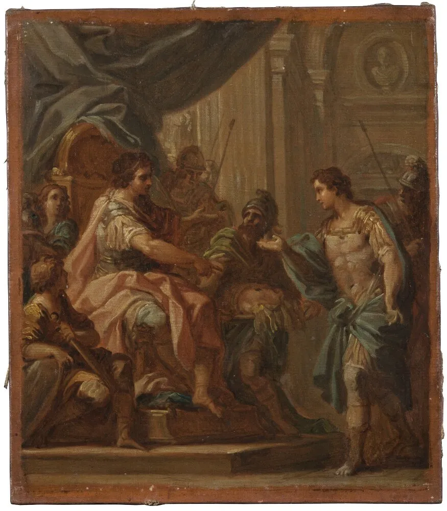At the age of 16, Alexander's education under Aristotle ended. Philip II had waged war against the Thracians to the north, which left Alexander in charge as regent and heir apparent. During Philip's absence, the Thracian tribe of Maedi revolted against Macedonia. Alexander responded quickly and drove them from their territory. The territory was colonized, and a city, named Alexandropolis, was founded. Upon Philip's return, Alexander was dispatched with a small force to subdue the revolts in southern Thrace. Campaigning against the Greek city of Perinthus, Alexander reportedly saved his father's life. Meanwhile, the city of Amphissa began to work lands that were sacred to Apollo near Delphi, a sacrilege that gave Philip the opportunity to further intervene in Greek affairs. While Philip was occupied in Thrace, Alexander was ordered to muster an army for a campaign in southern Greece. Concerned that other Greek states might intervene, Alexander made it look as though he was preparing to attack Illyria instead. During this turmoil, the Illyrians invaded Macedonia, only to be repelled by Alexander. Philip and his army joined his son in 338 BC, and they marched south through Thermopylae, taking it after stubborn resistance from its Theban garrison. They went on to occupy the city of Elatea, only a few days' march from both Athens and Thebes. The Athenians, led by Demosthenes, voted to seek alliance with Thebes against Macedonia. Both Athens and Philip sent embassies to win Thebes's favour, but Athens won the contest. Philip marched on Amphissa (ostensibly acting on the request of the Amphictyonic League), capturing the mercenaries sent there by Demosthenes and accepting the city's surrender. Philip then returned to Elatea, sending a final offer of peace to Athens and Thebes, who both rejected it.
As Philip marched south, his opponents blocked him near Chaeronea, Boeotia. During the ensuing Battle of Chaeronea, Philip commanded the right wing and Alexander the left, accompanied by a group of Philip's trusted generals. According to the ancient sources, the two sides fought bitterly for some time. Philip deliberately commanded his troops to retreat, counting on the untested Athenian hoplites to follow, thus breaking their line. Alexander was the first to break the Theban lines, followed by Philip's generals. Having damaged the enemy's cohesion, Philip ordered his troops to press forward and quickly routed them. With the Athenians lost, the Thebans were surrounded. Left to fight alone, they were defeated. After the victory at Chaeronea, Philip and Alexander marched unopposed into the Peloponnese, welcomed by all cities; however, when they reached Sparta, they were refused, but did not resort to war. At Corinth, Philip established a "Hellenic Alliance" (modelled on the old anti-Persian alliance of the Greco-Persian Wars), which included most Greek city-states except Sparta. Philip was then named Hegemon (often translated as "Supreme Commander") of this league (known by modern scholars as the League of Corinth), and announced his plans to attack the Persian Empire.
King of Macedon
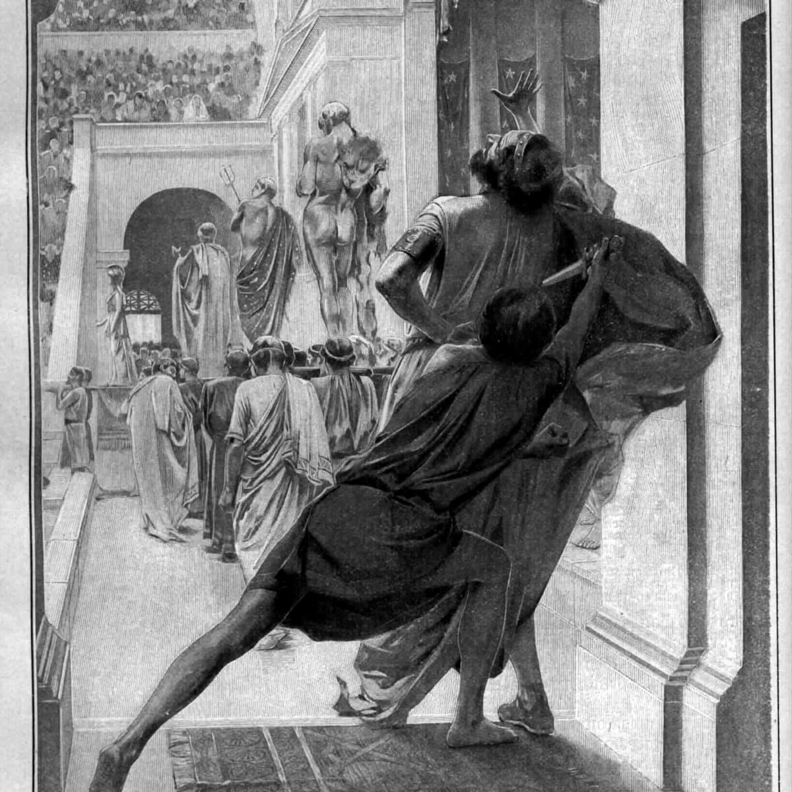In summer 336 BC, while at Aegae attending the wedding of his daughter Cleopatra to Olympias's brother, Alexander I of Epirus, Philip was assassinated by the captain of his bodyguards, Pausanias. As Pausanias tried to escape, he tripped over a vine and was killed by his pursuers, including two of Alexander's companions, Perdiccas and Leonnatus. Alexander was proclaimed king on the spot by the nobles and army at the age of 20. Alexander began his reign by eliminating potential rivals to the throne. He had his cousin, the former Amyntas IV, executed. He also had two Macedonian princes from the region of Lyncestis killed for having been involved in his father's assassination, but spared a third, Alexander Lyncestes. Olympias had Cleopatra Eurydice, and Europa, her daughter by Philip, burned alive. When Alexander learned about this, he was furious. Alexander also ordered the murder of Attalus, who was in command of the advance guard of the army in Asia Minor and Cleopatra's uncle. Attalus was at that time corresponding with Demosthenes, regarding the possibility of defecting to Athens. Attalus also had severely insulted Alexander, and following Cleopatra's murder, Alexander may have considered him too dangerous to be left alive. Alexander spared Arrhidaeus, who was by all accounts mentally disabled, possibly as a result of poisoning by Olympias.
News of Philip's death roused many states into revolt, including Thebes, Athens, Thessaly, and the Thracian tribes north of Macedon. When news of the revolts reached Alexander, he responded quickly. Though advised to use diplomacy, Alexander mustered 3,000 Macedonian cavalry and rode south towards Thessaly. He found the Thessalian army occupying the pass between Mount Olympus and Mount Ossa, and ordered his men to ride over Mount Ossa. When the Thessalians awoke the next day, they found Alexander in their rear and promptly surrendered, adding their cavalry to Alexander's force. He then continued south towards the Peloponnese. Alexander stopped at Thermopylae, where he was recognized as the leader of the Amphictyonic League before heading south to Corinth. Athens sued for peace and Alexander pardoned the rebels. At Corinth, Alexander took the title of Hegemon ("leader") and, like Philip, was appointed commander for the coming war against Persia. He also received news of a Thracian uprising.
Balkan Campaign
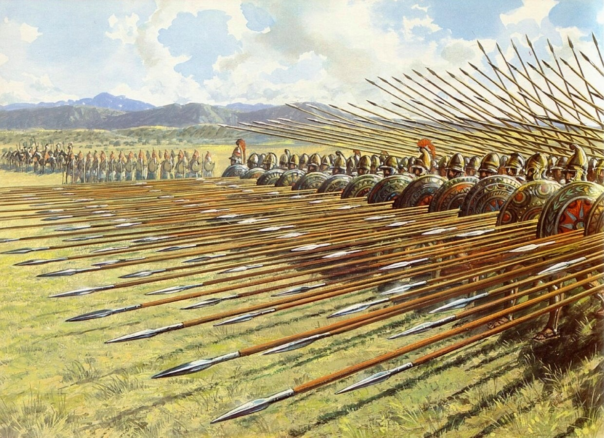Before crossing to Asia, Alexander wanted to safeguard his northern borders. In the spring of 335 BC, he advanced to suppress several revolts. Starting from Amphipolis, he travelled east into the country of the "Independent Thracians"; and at Mount Haemus, the Macedonian army attacked and defeated the Thracian forces manning the heights. The Macedonians marched into the country of the Triballi, and defeated their army near the Lyginus river (a tributary of the Danube). Alexander then marched for three days to the Danube, encountering the Getae tribe on the opposite shore. Crossing the river at night, he surprised them and forced their army to retreat after the first cavalry skirmish.
News then reached Alexander that the Illyrian chieftain Cleitus and King Glaukias of the Taulantii were in open revolt against his authority. Marching west into Illyria, Alexander defeated each in turn, forcing the two rulers to flee with their troops. With these victories, he secured his northern frontier. While Alexander campaigned north, the Thebans and Athenians rebelled once again. Alexander immediately headed south. While the other cities again hesitated, Thebes decided to fight. The Theban resistance was ineffective, and Alexander razed the city and divided its territory between the other Boeotian cities. The end of Thebes cowed Athens, leaving all of Greece temporarily at peace. Alexander then set out on his Asian campaign, leaving Antipater as regent.
Conquest of Persia
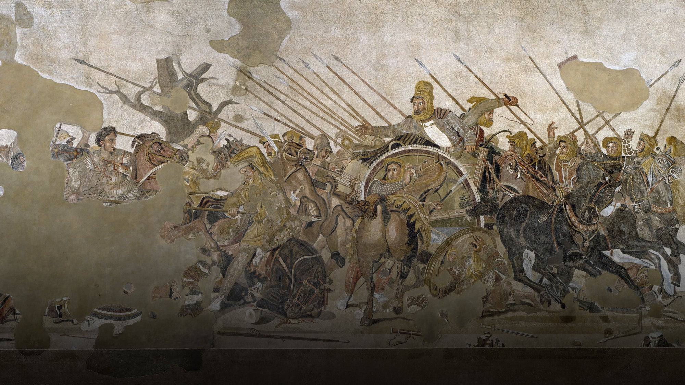After his victory at the Battle of Chaeronea (338 BC), Philip II began the work of establishing himself as hēgemṓn of a league which according to Diodorus was to wage a campaign against the Persians for the sundry grievances Greece suffered in 480 and free the Greek cities of the western coast and islands from Achaemenid rule. In 336 he sent Parmenion, with Amyntas, Andromenes and Attalus, and an army of 10,000 men into Anatolia to make preparations for an invasion. At first, all went well. The Greek cities on the western coast of Anatolia revolted until the news arrived that Philip had been murdered and had been succeeded by his young son Alexander. The Macedonians were demoralized by Philip's death and were subsequently defeated near Magnesia by the Achaemenids under the command of the mercenary Memnon of Rhodes. Taking over the invasion project of Philip II, Alexander's army crossed the Hellespont in 334 BC with approximately 48,100 soldiers, 6,100 cavalry and a fleet of 120 ships with crews numbering 38,000, drawn from Macedon and various Greek city-states, mercenaries, and feudally raised soldiers from Thrace, Paionia, and Illyria. He showed his intent to conquer the entirety of the Persian Empire by throwing a spear into Asian soil and saying he accepted Asia as a gift from the gods. This also showed Alexander's eagerness to fight, in contrast to his father's preference for diplomacy.
After an initial victory against Persian forces at the Battle of the Granicus, Alexander accepted the surrender of the Persian provincial capital and treasury of Sardis; he then proceeded along the Ionian coast, granting autonomy and democracy to the cities. Miletus, held by Achaemenid forces, required a delicate siege operation, with Persian naval forces nearby. Further south, at Halicarnassus, in Caria, Alexander successfully waged his first large-scale siege, eventually forcing his opponents, the mercenary captain Memnon of Rhodes and the Persian satrap of Caria, Orontobates, to withdraw by sea. Alexander left the government of Caria to a member of the Hecatomnid dynasty, Ada, who adopted Alexander. From Halicarnassus, Alexander proceeded into mountainous Lycia and the Pamphylian plain, asserting control over all coastal cities to deny the Persians naval bases. From Pamphylia onwards the coast held no major ports and Alexander moved inland. At Termessos, Alexander humbled but did not storm the Pisidian city. At the ancient Phrygian capital of Gordium, Alexander "undid" the hitherto unsolvable Gordian Knot, a feat said to await the future "king of Asia". According to the story, Alexander proclaimed that it did not matter how the knot was undone and hacked it apart with his sword.
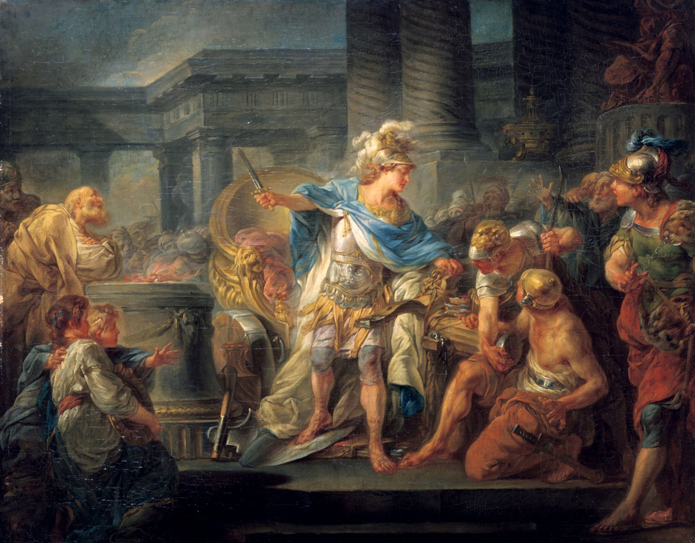In spring 333 BC, Alexander crossed the Taurus into Cilicia. After a long pause due to an illness, he marched on towards Syria. Though outmanoeuvered by Darius's significantly larger army, he marched back to Cilicia, where he defeated Darius at Issus. Darius fled the battle, causing his army to collapse, and left behind his wife, his two daughters, his mother Sisygambis, and a fabulous treasure. He offered a peace treaty that included the lands he had already lost, and a ransom of 10,000 talents for his family. Alexander replied that since he was now king of Asia, it was he alone who decided territorial divisions. Alexander proceeded to take possession of Syria, and most of the coast of the Levant. In the following year, 332 BC, he was forced to attack Tyre, which he captured after a long and difficult siege. The men of military age were massacred and the women and children sold into slavery.
Conquest of Egypt
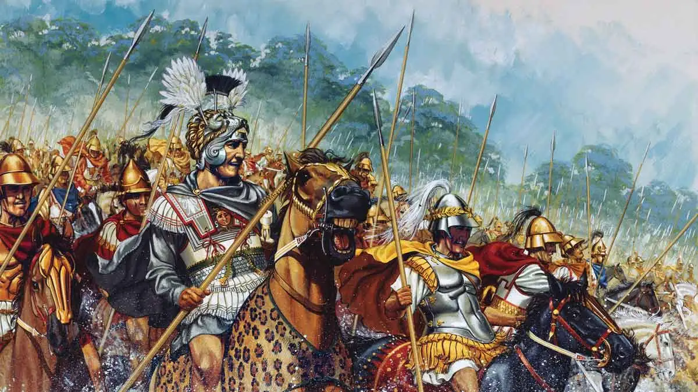When Alexander destroyed Tyre, most of the towns on the route to Egypt quickly capitulated. However, Alexander was met with resistance at Gaza. The stronghold was heavily fortified and built on a hill, requiring a siege. When "his engineers pointed out to him that because of the height of the mound it would be impossible... this encouraged Alexander all the more to make the attempt". After three unsuccessful assaults, the stronghold fell, but not before Alexander had received a serious shoulder wound. As in Tyre, men of military age were put to the sword and the women and children were sold into slavery. Egypt was only one of a large number of territories taken by Alexander from the Persians. After his trip to Siwa, Alexander was crowned in the temple of Ptah at Memphis. It appears that the Egyptian people did not find it disturbing that he was a foreigner - nor that he was absent for virtually his entire reign. Alexander restored the temples neglected by the Persians and dedicated new monuments to the Egyptian gods. In the temple of Luxor, near Karnak, he built a chapel for the sacred barge. During his brief months in Egypt, he reformed the taxation system on the Greek models and organized the military occupation of the country, but, early in 331 BC, he left for Asia in pursuit of the Persians.
Alexander advanced on Egypt in later 332 BC, where he was regarded as a liberator. To legitimize taking power and be recognized as the descendant of the long line of pharaohs, Alexander made sacrifices to the gods at Memphis and went to consult the famous oracle of Amun-Ra at the Siwa Oasis. He was pronounced son of the deity Amun at the Oracle of Siwa Oasis in the Libyan desert. Henceforth, Alexander often referred to Zeus-Ammon as his true father, and after his death, currency depicted him adorned with the Horns of Ammon as a symbol of his divinity. The Greeks interpreted this message - one that the gods addressed to all pharaohs - as a prophecy. During his stay in Egypt, he founded Alexandria, which would become the prosperous capital of the Ptolemaic Kingdom after his death. Control of Egypt passed to Ptolemy I (son of Lagos), the founder of the Ptolemaic Dynasty (305-30 BC) after the death of Alexander.
Capture of Babylon
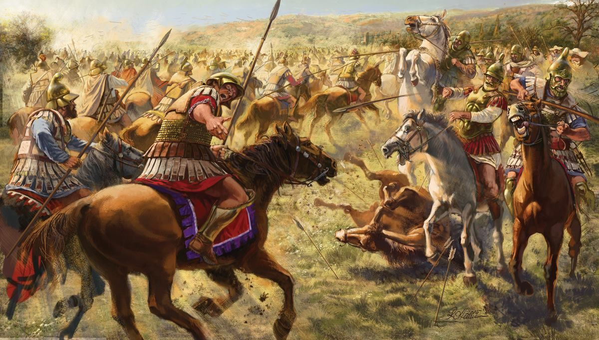Leaving Egypt in 331 BC, Alexander marched eastward into Achaemenid Assyria in Upper Mesopotamia (now northern Iraq) and defeated Darius again at the Battle of Gaugamela. Darius once more fled the field, and Alexander chased him as far as Arbela. Gaugamela would be the final and decisive encounter between the two. Darius fled over the mountains to Ecbatana (modern Hamadan) while Alexander captured Babylon. Babylonian astronomical diaries say that "the king of the world, Alexander" sent his scouts with a message to the people of Babylon before entering the city: "I shall not enter your houses". From Babylon, Alexander went to Susa, one of the Achaemenid capitals, and captured its treasury. He sent the bulk of his army to the Persian ceremonial capital of Persepolis via the Persian Royal Road. Alexander himself took selected troops on the direct route to the city. He then stormed the pass of the Persian Gates (in the modern Zagros Mountains) which had been blocked by a Persian army under Ariobarzanes and then hurried to Persepolis before its garrison could loot the treasury.
On entering Persepolis, Alexander allowed his troops to loot the city for several days. Alexander stayed in Persepolis for five months. During his stay a fire broke out in the eastern palace of Xerxes I and spread to the rest of the city. Possible causes include a drunken accident or deliberate revenge for the burning of the Acropolis of Athens during the Second Persian War by Xerxes; Plutarch and Diodorus allege that Alexander's companion, the hetaera Thaïs, instigated and started the fire. Even as he watched the city burn, Alexander immediately began to regret his decision. Plutarch claims that he ordered his men to put out the fires, but that the flames had already spread to most of the city. Curtius claims that Alexander did not regret his decision until the next morning. Plutarch recounts an anecdote in which Alexander pauses and talks to a fallen statue of Xerxes as if it were a live person: Shall I pass by and leave you lying there because of the expeditions you led against Greece, or shall I set you up again because of your magnanimity and your virtues in other respects?
Fall of the Persian Empire
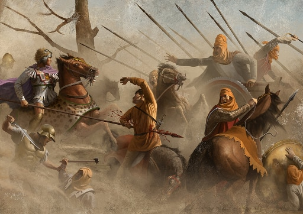Alexander then chased Darius, first into Media, and then Parthia. The Persian king no longer controlled his own destiny, and was taken prisoner by Bessus, his Bactrian satrap and kinsman. As Alexander approached, Bessus had his men fatally stab the Great King and then declared himself Darius's successor as Artaxerxes V, before retreating into Central Asia to launch a guerrilla campaign against Alexander. Alexander buried Darius's remains next to his Achaemenid predecessors in a regal funeral. He claimed that, while dying, Darius had named him as his successor to the Achaemenid throne. The Achaemenid Empire is normally considered to have fallen with Darius. However, as basic forms of community life and the general structure of government were maintained and resuscitated by Alexander under his own rule, he, in the words of the Iranologist Pierre Briant "may therefore be considered to have acted in many ways as the last of the Achaemenids."
Alexander viewed Bessus as a usurper and set out to defeat him. This campaign, initially against Bessus, turned into a grand tour of central Asia. Alexander founded a series of new cities, all called Alexandria, including modern Kandahar in Afghanistan, and Alexandria Eschate ("The Furthest") in modern Tajikistan. The campaign took Alexander through Media, Parthia, Aria (West Afghanistan), Drangiana, Arachosia (South and Central Afghanistan), Bactria (North and Central Afghanistan), and Scythia. In 329 BC, Spitamenes, who held an undefined position in the satrapy of Sogdiana, betrayed Bessus to Ptolemy, one of Alexander's trusted companions, and Bessus was executed. However, when, at some point later, Alexander was on the Jaxartes dealing with an incursion by a horse nomad army, Spitamenes raised Sogdiana in revolt. Alexander personally defeated the Scythians at the Battle of Jaxartes and immediately launched a campaign against Spitamenes, defeating him in the Battle of Gabai. After the defeat, Spitamenes was killed by his own men, who then sued for peace.
Indian Campaign
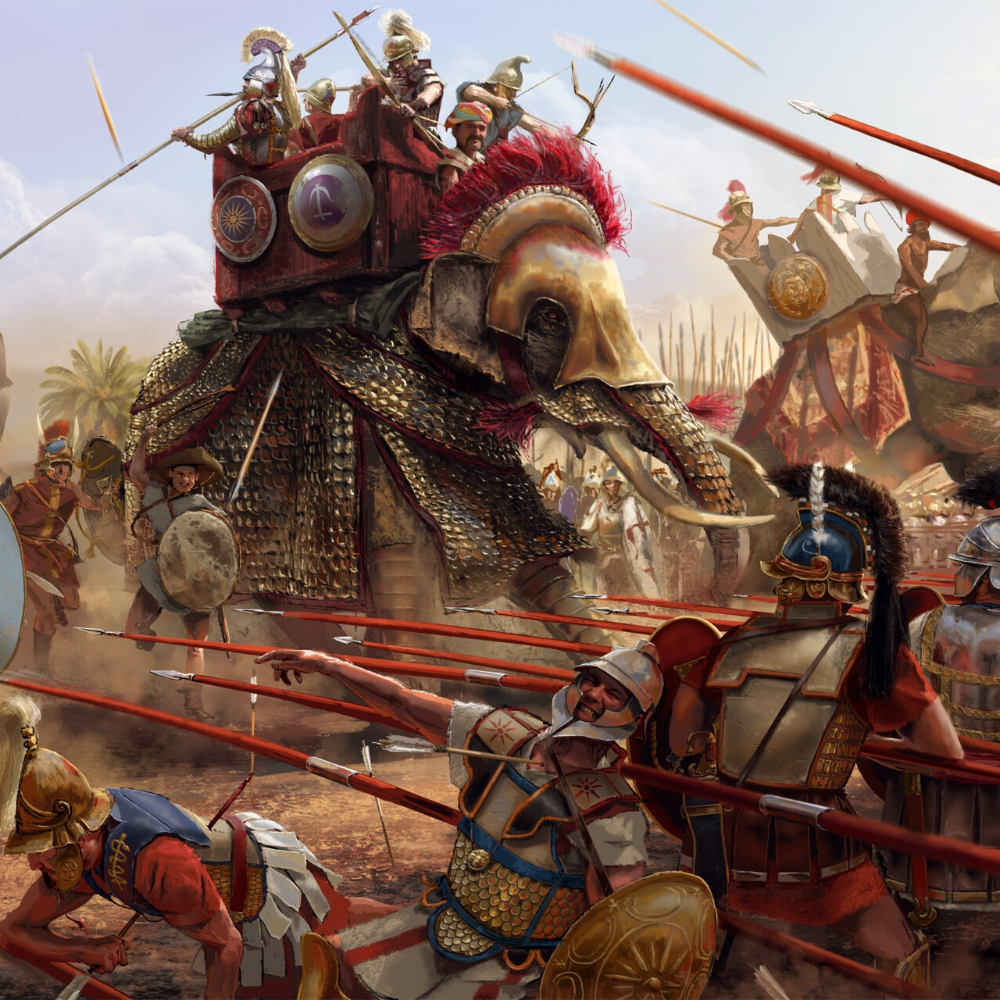After the death of Spitamenes and his marriage to Roxana (Raoxshna in Old Iranian) to cement relations with his new satrapies, Alexander turned to the Indian subcontinent. He invited the chieftains of the former satrapy of Gandhara (a region presently straddling eastern Afghanistan and northern Pakistan), to come to him and submit to his authority. Omphis (Indian name Ambhi), the ruler of Taxila, whose kingdom extended from the Indus to the Hydaspes (Jhelum), complied, but the chieftains of some hill clans, including the Aspasioi and Assakenoi sections of the Kambojas (known in Indian texts also as Ashvayanas and Ashvakayanas), refused to submit. Ambhi hastened to relieve Alexander of his apprehension and met him with valuable presents, placing himself and all his forces at his disposal. Alexander not only returned Ambhi his title and the gifts but he also presented him with a wardrobe of "Persian robes, gold and silver ornaments, 30 horses and 1,000 talents in gold". Alexander was emboldened to divide his forces, and Ambhi assisted Hephaestion and Perdiccas in constructing a bridge over the Indus where it bends at Hund, supplied their troops with provisions, and received Alexander himself, and his whole army, in his capital city of Taxila, with every demonstration of friendship and the most liberal hospitality.
On the subsequent advance of the Macedonian king, Taxiles accompanied him with a force of 5,000 men and took part in the Battle of the Hydaspes. After that victory, he was sent by Alexander in pursuit of Porus, to whom he was charged to offer favourable terms, but narrowly escaped losing his life at the hands of his old enemy. Subsequently, however, the two rivals were reconciled by the personal mediation of Alexander; and Taxiles, after having contributed zealously to the equipment of the fleet on the Hydaspes, was entrusted by the king with the government of the whole territory between that river and the Indus. A considerable accession of power was granted him after the death of Philip, son of Machatas; and he was allowed to retain his authority at the death of Alexander himself (323 BC), as well as in the subsequent partition of the provinces at Triparadisus, 321 BC. In the winter of 327/326 BC, Alexander personally led a campaign against the Aspasioi of the Kunar Valley, the Guraeans of the Guraeus Valley, and the Assakenoi of the Swat and Buner Valleys. A fierce contest ensued with the Aspasioi in which Alexander was wounded in the shoulder by a dart, but eventually the Aspasioi lost. Alexander then faced the Assakenoi, who fought against him from the strongholds of Massaga, Ora and Aornos.
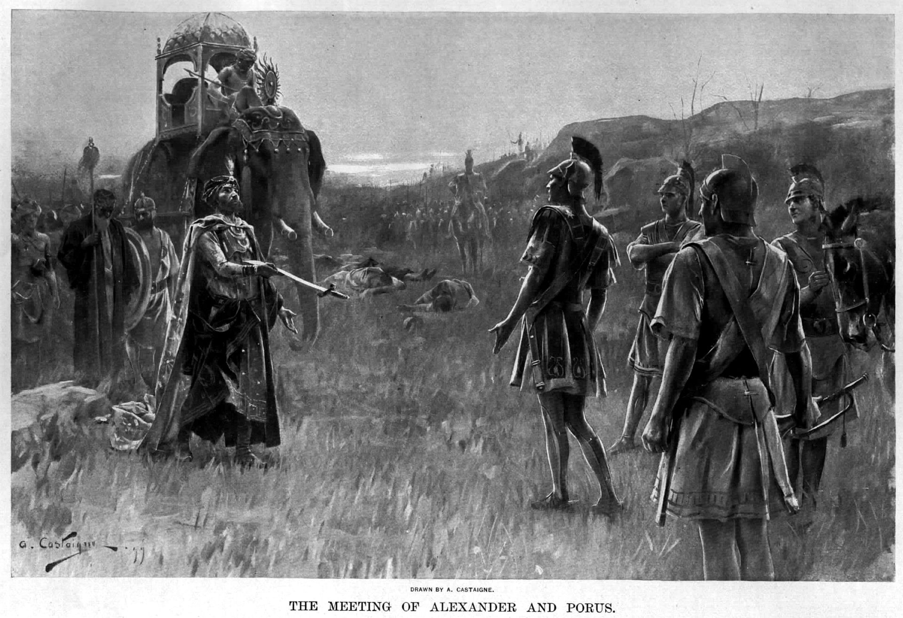The fort of Massaga was reduced only after days of bloody fighting, in which Alexander was wounded seriously in the ankle. According to Curtius, "Not only did Alexander slaughter the entire population of Massaga, but also did he reduce its buildings to rubble." A similar slaughter followed at Ora. In the aftermath of Massaga and Ora, numerous Assakenians fled to the fortress of Aornos. Alexander followed close behind and captured the strategic hill-fort after four bloody days. After Aornos, Alexander crossed the Indus and fought and won an epic battle against King Porus, who ruled a region lying between the Hydaspes and the Acesines (Chenab), in what is now the Punjab, in the Battle of the Hydaspes in 326 BC. Alexander was impressed by Porus's bravery, and made him an ally. He appointed Porus as satrap, and added to Porus's territory land that he did not previously own, towards the south-east, up to the Hyphasis (Beas). Choosing a local helped him control these lands so distant from Greece. Alexander founded two cities on opposite sides of the Hydaspes river, naming one Bucephala, in honour of his horse, who died around this time. The other was Nicaea (Victory), thought to be located at the site of modern-day Mong, Punjab. Philostratus the Elder in the Life of Apollonius of Tyana writes that in the army of Porus there was an elephant who fought brave against Alexander's army and Alexander dedicated it to the Helios (Sun) and named it Ajax, because he thought that a so great animal deserved a great name. The elephant had gold rings around its tusks and an inscription was on them written in Greek: "Alexander the son of Zeus dedicates Ajax to the Helios."
Revolt of the Hellenic Army
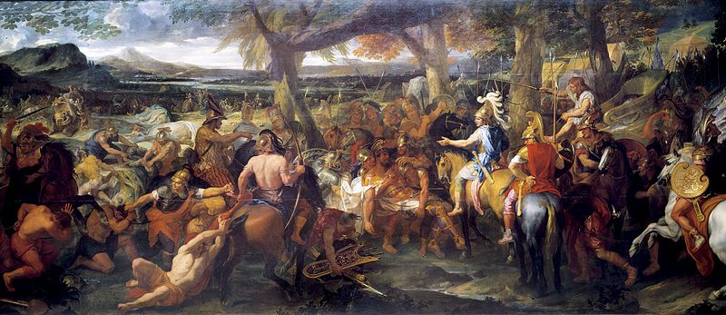East of Porus's kingdom, near the Ganges River, was the Nanda Empire of Magadha, and further east, the Gangaridai Empire of Bengal region of the Indian subcontinent. Fearing the prospect of facing other large armies and exhausted by years of campaigning, Alexander's army mutinied at the Hyphasis River (Beas), refusing to march farther east. This river thus marks the easternmost extent of Alexander's conquests. Alexander tried to persuade his soldiers to march farther, but his general Coenus pleaded with him to change his opinion and return; the men, he said, "longed to again see their parents, their wives and children, their homeland". Alexander eventually agreed and turned south, marching along the Indus. Along the way his army conquered the Malhi (in modern-day Multan) and other Indian tribes; while besieging the Mallian citadel, Alexander suffered a near-fatal injury when an arrow penetrated his armor and entered his lung. Alexander sent much of his army to Carmania (modern southern Iran) with general Craterus, and commissioned a fleet to explore the Persian Gulf shore under his admiral Nearchus, while he led the rest back to Persia through the more difficult southern route along the Gedrosian Desert and Makran. Alexander reached Susa in 324 BC, but not before losing many men to the harsh desert.
Last Years
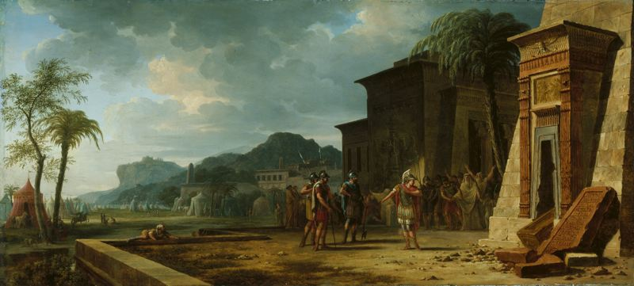Discovering that many of his satraps and military governors had misbehaved in his absence, Alexander executed several of them as examples on his way to Susa. As a gesture of thanks, he paid off the debts of his soldiers, and announced that he would send over-aged and disabled veterans back to Macedon, led by Craterus. His troops misunderstood his intention and mutinied at the town of Opis. They refused to be sent away and criticized his adoption of Persian customs and dress and the introduction of Persian officers and soldiers into Macedonian units. After three days, unable to persuade his men to back down, Alexander gave Persians command posts in the army and conferred Macedonian military titles upon Persian units. The Macedonians quickly begged forgiveness, which Alexander accepted, and held a great banquet with several thousand of his men. In an attempt to craft a lasting harmony between his Macedonian and Persian subjects, Alexander held a mass marriage of his senior officers to Persian and other noblewomen at Susa, but few of those marriages seem to have lasted much beyond a year. Meanwhile, upon his return to Persia, Alexander learned that guards of the tomb of Cyrus the Great in Pasargadae had desecrated it, and swiftly executed them. Alexander admired Cyrus the Great, from an early age reading Xenophon's Cyropaedia, which described Cyrus's heroism in battle and governance as a king and legislator. During his visit to Pasargadae, Alexander ordered his architect Aristobulus to decorate the interior of the sepulchral chamber of Cyrus's tomb.
Death of Alexander the Great
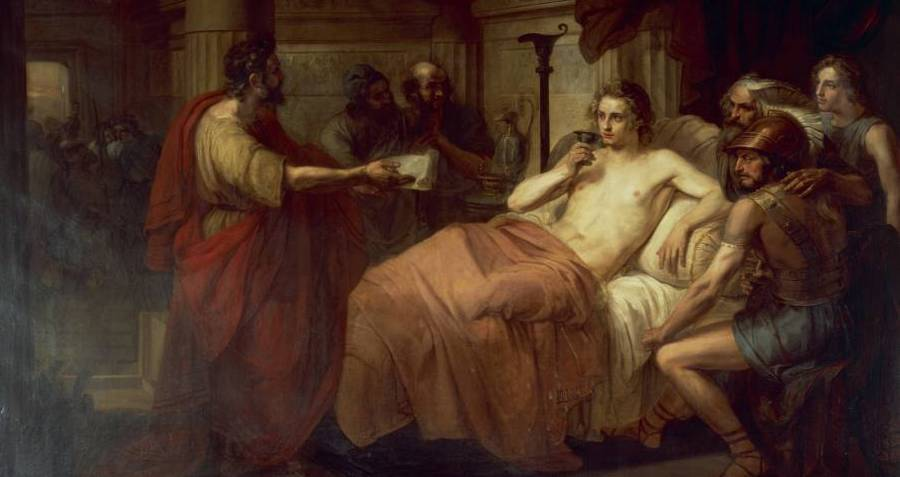Afterwards, Alexander travelled to Ecbatana to retrieve the bulk of the Persian treasure. There, his closest friend, Hephaestion, died of illness or poisoning. Hephaestion's death devastated Alexander and he ordered the preparation of an expensive funeral pyre in Babylon along with a decree for public mourning. Back in Babylon, Alexander planned a series of new campaigns, beginning with an invasion of Arabia, but he would not have a chance to realize them, as he died shortly after Hephaestion. On the evening of May 29, Alexander organized a banquet for his army to celebrate the end of the campaign of India and the onset of the invasion of the Arabian Peninsula. There is a tradition that they would only start serious drinking, after everyone was done with their meals, but the wine was usually heavily watered.
Before his death, someone asked Alexander on who would be his designated successor should he die, he responded: "To the strongest one." He may have also added that there would be funeral games to be played after his death. On either 10 or 11 June 323 BC, Alexander died in the palace of Nebuchadnezzar II, in Babylon, at age 32. There are two different versions of Alexander's death, differing slightly in details. Plutarch's account is that roughly 14 days before his death, Alexander entertained admiral Nearchus and spent the night and next day drinking with Medius of Larissa. Alexander developed a fever, which worsened until he was unable to speak. The common soldiers, anxious about his health, were granted the right to file past him as he silently waved at them. In the second account, Diodorus recounts that Alexander was struck with pain after downing a large bowl of unmixed wine in honour of Heracles followed by 11 days of weakness; he did not develop a fever, instead dying after some agony.
Hellenistic Period
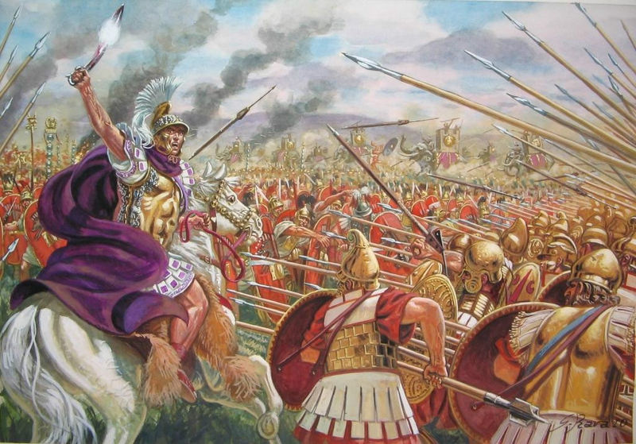The period from the death of Alexander the Great in 323 until the death of Cleopatra VII, the last Macedonian ruler of Egypt, is known as the Hellenistic period. In the early part of this period, a new form of kingship developed based on Macedonian and Near Eastern traditions. The first Hellenistic kings were previously Alexander's generals, and took power in the period following his death, though they were not part of existing royal lineages and lacked historic claims to the territories they controlled. The most important of these rulers in the decades after Alexander's death were Antigonus I and his son Demetrius in Macedonia and Greece, Ptolemy in Eygpt, and Seleucus I in Syria and the former Persian empire; smaller Hellenistic kingdoms included the Attalids in Anatolia and the Greco-Bactrian kingdom. In the early part of the Hellenistic period, the exact borders of the Hellenistic kingdoms were not settled. Antigonus attempted to expand his territory by attacking the other successor kingdoms until they joined against him, and he was killed at the Battle of Ipsus in 301 BC. His son Demetrius spent many years in Seleucid captivity, and his son, Antigonus II, only reclaimed the Macedonian throne around 276.
Meanwhile, the Seleucid kingdom gave up territory in the east to the Indian king Chandragupta Maurya in exchange for war elephants, and later lost large parts of Persia to the Parthian empire. By the mid-third century, the kingdoms of Alexander's successors was mostly stable, though there continued to be disputes over border areas. During the Hellenistic period, the importance of "Greece proper" (the territory of modern Greece) within the Greek-speaking world declined sharply. The great capitals of Hellenistic culture were Alexandria in the Ptolemaic Kingdom and Antioch in the Seleucid Empire. The conquests of Alexander had numerous consequences for the Greek city-states. It greatly widened the horizons of the Greeks and led to a steady emigration of the young and ambitious to the new Greek empires in the east. Many Greeks migrated to Alexandria, Antioch and the many other new Hellenistic cities founded in Alexander's wake, as far away as present-day Afghanistan and Pakistan, where the Greco-Bactrian Kingdom and the Indo-Greek Kingdom survived until the end of the first century BC.

The city-states within Greece formed themselves into two leagues; the Achaean League (including Thebes, Corinth and Argos) and the Aetolian League (including Sparta and Athens). For much of the period until the Roman conquest, these leagues were at war, often participating in the conflicts between the Diadochi (the successor states to Alexander's empire). The Antigonid Kingdom became involved in a war with the Roman Republic in the late 3rd century. Although the First Macedonian War was inconclusive, the Romans, in typical fashion, continued to fight Macedon until it was completely absorbed into the Roman Republic (by 149 BC). In the east, the unwieldy Seleucid Empire gradually disintegrated, although a rump survived until 64 BC, whilst the Ptolemaic Kingdom continued in Egypt until 30 BC when it too was conquered by the Romans. The Aetolian league grew wary of Roman involvement in Greece, and sided with the Seleucids in the Roman–Seleucid War; when the Romans were victorious, the league was effectively absorbed into the Republic. Although the Achaean league outlasted both the Aetolian league and Macedon, it was also soon defeated and absorbed by the Romans in 146 BC, bringing Greek independence to an end.